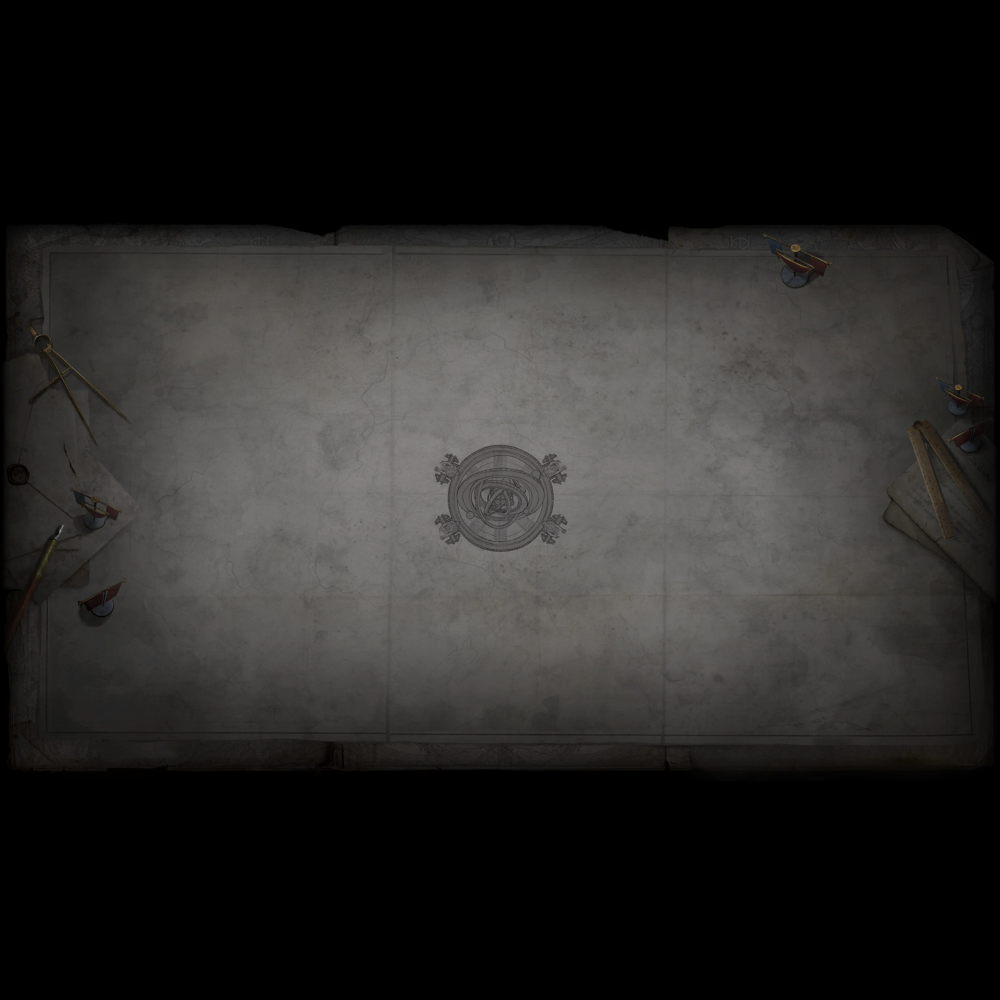

Le mappe ottenibili nell'atlante di questa lega, con le divination card che ci cadono e i punteggi layout, densità e boss.
| Mappa | Layout | Densità | Boss | Carte | c/mappa | Atteso | Lotteria | Totale | Carta che traina |
|---|

Rotella per zoomare, trascina per spostarti. Sull'atlante compaiono le 135 mappe con un'icona: le altre 19 voci — arene di boss e contenuto di lega — restano solo nell'elenco.
prezzo × peso / pool, ÷10 se cade dal boss, ancorato a The Chains that Bind = 916 estrazioni per mappa). L'atteso include tutto; l'incassabile tiene solo le carte che escono almeno una volta ogni 500 mappe, e la differenza è la quota lotteria: Cage ha il 97% del suo valore in una carta sola.
deathbeam/maps-of-exile), lega .